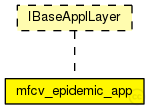

This documentation is released under the Creative Commons license
This documentation is released under the Creative Commons license(no description)

The following diagram shows usage relationships between types. Unresolved types are missing from the diagram. Click here to see the full picture.
The following diagram shows inheritance relationships for this type. Unresolved types are missing from the diagram. Click here to see the full picture.
| Name | Type | Default value | Description |
|---|---|---|---|
| debug | bool | false |
output debugging information |
| headerLength | int | 0bit |
length of the application message header (in bits) |
| testNumber | int |
number of test to run (-1: no test) |
| Name | Value | Description |
|---|---|---|
| display | i=block/app2 | |
| class | Veins::TraCITestApp |
| Name | Direction | Size | Description |
|---|---|---|---|
| lowerLayerIn | input |
from network layer |
|
| lowerLayerOut | output |
to network layer |
|
| lowerControlIn | input |
control from network layer |
|
| lowerControlOut | output |
control to network layer |
simple mfcv_epidemic_app like IBaseApplLayer { parameters: bool debug = default(false); // output debugging information int headerLength @unit("bit") = default(0bit); // length of the application message header (in bits) int testNumber; // number of test to run (-1: no test) @display("i=block/app2"); @class("Veins::TraCITestApp"); gates: input lowerLayerIn; // from network layer output lowerLayerOut; // to network layer input lowerControlIn; // control from network layer output lowerControlOut; // control to network layer }
This documentation is released under the Creative Commons license